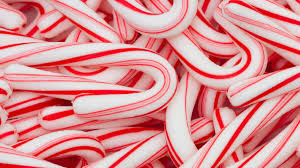

This year there’s a new Halloween flavor at Target called M&Ms Boo-tterscotch which are rather similar. They’re also a white chocolate center, but instead of bland note of candy corn these have a strong flavor of butterscotch. These are a Target exclusive, but like other flavors, if they go well, we might see them released to other stores in future seasons

The smell when opening the bag is overwhelmingly buttery sweet, but not the buttered popcorn smell that I got from the Candy Corn Peeps. It’s pleasant and comforting, if you’re the type of person who likes butterscotch pudding. I’m one of those people.
.jpg)
I bought some Candy Corn M&Ms to compare, just to be sure that they weren’t the same thing, but after I opened the Boo-tterscotch I realized that really wasn’t necessary. The Candy Corn M&Ms are unflavored compared to these.

I liked them, but I’m a white chocolate lover. They’re sweet and sticky and fake. They’re pretty to look at, a bit expensive (the special flavors are in 8 ounce packages while the regular are mostly 9.9 ounces) and of course in limited supply and sold only at Target.